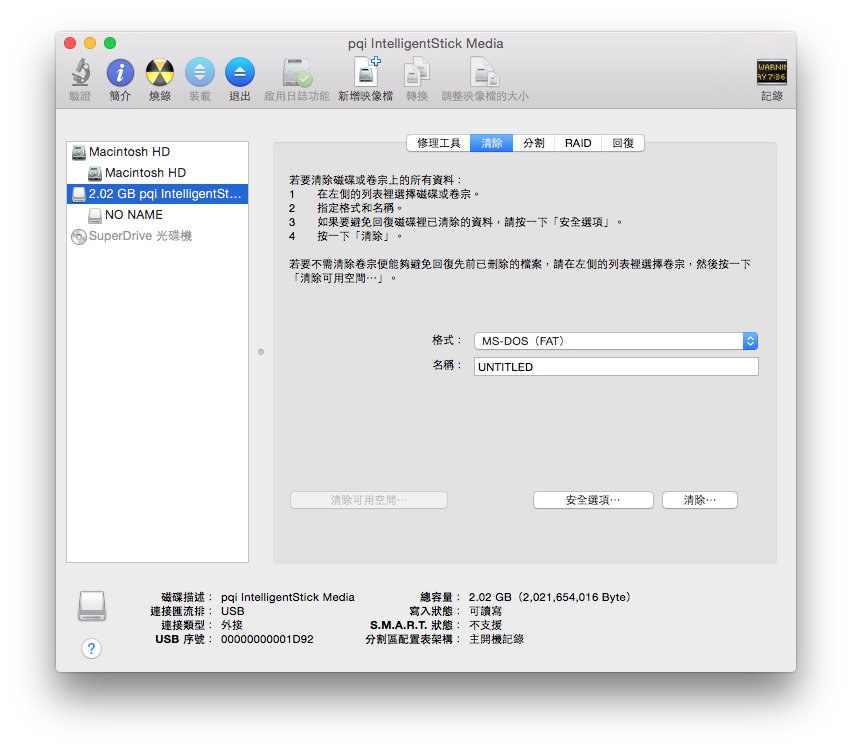
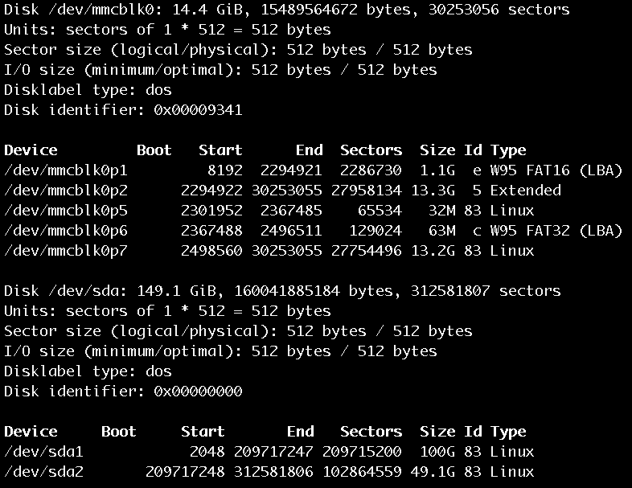
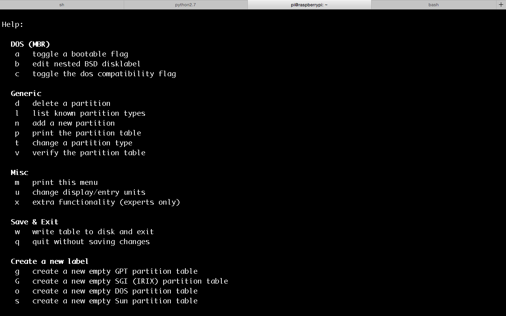
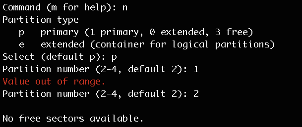
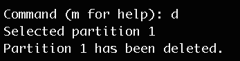
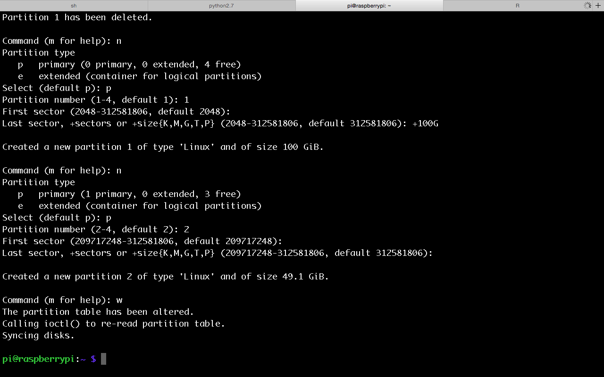
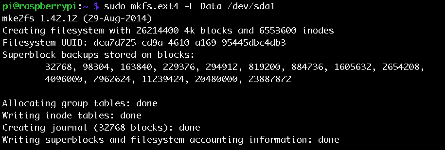

之前留了一顆從舊筆電拆下來的160G硬碟，曾經被拿來應急，安裝了Ubuntu，一段時間沒用後，似乎再也讀不到Ubuntu，剛好可以拿來當作擴充Raspberry Pi的硬碟。
試了Arch、Windows和Mac，似乎只剩下Mac可以讀到這顆硬碟，只好先用Mac將它格式化。
硬碟工具程式
首先先找到硬碟工具程式。
然後，選擇清除，格式選擇MS-DOS (FAT)，填上自己喜歡的名字之後，按下清除。

選擇FAT，其實就是將檔案系統格式設定為FAT32，FAT32對熱插拔支援性較強，單一檔案上限 4GB。如果選擇ExFAT的話，就不限制單一檔案大小，算是FAT32的改良版，但是Raspberry Pi不支援。至於MAC OS擴充格式，也就是HFS+，Raspberry Pi也無法支援，不過這對Mac來說則是最好的檔案系統格式，可以作為Mac 中的時光機（Time Machine）使用的檔案系統。
Raspberry Pi擴充硬碟
因為FAT32限制單一檔案大小，所以將硬碟接上Raspberry Pi後，就應該改變成 ext4 (Fourth extended filesystem)的檔案系統格式。ext4可以支援1EB的分割磁區，以及1TB的檔案。這似乎是比FAT32更好的選項。
接上硬碟之後，Raspberry Pi會自動掛載，可以用這個指令，lsblk，查看現在已掛載的儲存裝置，可以看到儲存裝置的容量，以及作為掛載點（MOUNTPOINT）的資料夾。

或者輸入sudo fdisk -l，也可以看到儲存裝置的資訊，還可以看出每個儲存裝置的檔案系統格式。

卸載磁碟
因為Raspberry Pi 會自動掛載，所以可以先卸載磁碟。
sudo umount /media/pi/RASPDB/ #當初掛載點是/media/pi/RASPDB/
清理和分割
接下來都要靠fdisk來完成了，首先執行sudo fdisk /dev/sda，sda是掛載的第一個磁碟的名稱，所以第二個會叫sdb，以此類推。
一開始會看到：
Changes will remain in memory only, until you decide to write them.
Be careful before using the write command.
Command (m for help):
如果輸入m，就會看到各種指令的用法：

如果輸入q就會離開，n則是進行下一步。然後，接下來可以指定磁區的類型，通常會是primary，所以選擇p。接著是錯誤示範：因為一開始硬碟在Mac時，全部的空間都已經劃分成一個磁區了，所以所以選擇磁區編號就會有問題，1號已經有人用了，且沒有空間給2號了。

正確的做法應該是要先刪除磁區，一開始選擇d。

再來，輸入n-->p-->輸入磁區編號-->選擇磁區初始位置-->選擇磁區大小。如果一開始沒有把整個硬碟都劃分成同一分割區，可以再進行下一個分割區的設定，設定完再輸入w，就完成磁區分割了。

格式化
系統會自動按照順序命名分割區名稱，第一個磁碟被分割成兩個分割區，名稱就會是sda1與sda2，分別對他們做格式化(ext4)：
sudo mkfs.ext4 -L Data /dev/sda1
sudo mkfs.ext4 -L Data /dev/sda2
結果如下：

掛載磁碟
掛載的方式其實有兩種，第一種就是直接重開機，讓系統自動掛載，掛載點就會是/media/pi/Data、/media/pi/Data1......，以此類推。另一種方式就是自己手動掛載：
先建立掛載點，並且改變擁有者
sudo mkdir /media/pi/Data
sudo chown pi:pi /media/pi/Data
手動掛載：
sudo mount -t vfat -o uid=pi,gid=pi /dev/sda1 /media/pi/Data